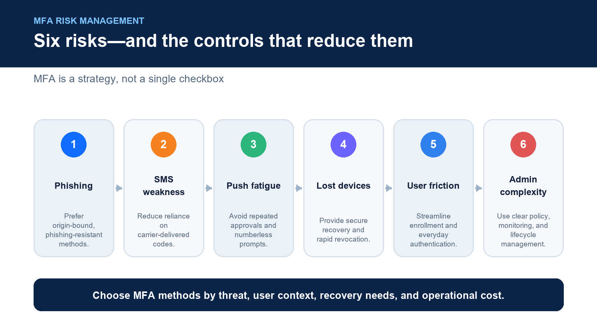

Multi-Factor Authentication (MFA) has become one of the most widely recommended cybersecurity practices for protecting digital identities.
And for good reason.
MFA significantly reduces the risk of account compromise by requiring users to provide more than just a password before gaining access to sensitive systems and applications.
However, like any security technology, MFA is not perfect.
A common misconception is:
"If we implement MFA, our security problem is solved."
The reality is more nuanced.
MFA is a critical layer of defense, but the type of MFA, how it is implemented, and how users recover access all determine its effectiveness.
Some MFA methods can still be vulnerable to phishing, social engineering, device loss, and user frustration. Poorly designed MFA can even create operational challenges that reduce adoption and encourage insecure workarounds.
The future of authentication is not simply adding more factors.
It is creating authentication that is:
More secure
More resistant to modern attacks
Easier for users
More resilient when things go wrong
What Is Full Duplex Authentication® (FDA)?
Full Duplex Authentication® (FDA) is the patented authentication technology powering PasswordFree®, Identité's Software-as-a-Service (SaaS) authentication platform, and NoPass™, its enterprise Platform-as-a-Service (PaaS) solution. Rather than simply adding another verification step to passwords, FDA securely validates both the user and the trusted device through a unified, passwordless authentication process.
Authentication powered by FDA is designed to address many traditional MFA weaknesses through passwordless authentication, phishing-resistant identity verification, Emergency PIN Authentication, and Secure Backup & Restore, allowing organizations to maintain both security and business continuity.
MFA Is Effective—But Not All MFA Is Equal

Before discussing the risks, it is important to recognize that MFA remains one of the most effective security improvements organizations can make.
MFA helps protect against:
Stolen passwords
Credential reuse
Automated login attacks
Unauthorized account access
A compromised password alone is often not enough when MFA is properly implemented.
However, the security strength of MFA depends heavily on the authentication method being used.
There is a significant difference between:
SMS-based MFA
Authenticator apps
Push notifications
Hardware security keys
Passwordless authentication
Not all MFA provides the same level of protection.
Risk #1: Phishing Can Still Defeat Some MFA Methods
One of the biggest misconceptions about MFA is that it completely prevents phishing.
It does not.
Traditional MFA methods may still be vulnerable when attackers convince users to provide:
Passwords
One-time codes
Push approvals
For example, an attacker may create a fake login page that captures:
Username
Password
MFA code
The attacker then immediately uses those credentials on the legitimate website.
This type of attack is known as:
Real-time phishing
Adversary-in-the-middle (AiTM) attacks
Session interception
The Solution: Phishing-Resistant Authentication
Modern authentication is moving toward methods that cannot easily be intercepted or replayed.
Examples include:
Hardware security keys
FIDO-based authentication
Passwordless authentication
Cryptographic identity verification
Authentication powered by Full Duplex Authentication® is designed around this evolution by reducing dependency on passwords and vulnerable one-time codes.
Risk #2: SMS-Based MFA Has Known Weaknesses
SMS MFA is often better than no MFA.
However, it is not considered the strongest authentication method.
Security concerns include:
SIM-swapping attacks
Phone number hijacking
SMS interception
Telecommunications vulnerabilities
The National Institute of Standards and Technology (NIST) has advised organizations to avoid relying on SMS-based authentication for higher-risk applications because of these security concerns.
For protecting sensitive enterprise systems, organizations increasingly prefer stronger authentication methods.
Risk #3: MFA Fatigue and Push Notification Attacks
Many organizations use push-based MFA applications.
The process is simple:
User attempts login.
Phone receives an approval request.
User approves.
The problem?
Attackers have learned to exploit human behavior.
In an MFA fatigue attack, attackers repeatedly send authentication requests until a user accidentally approves one just to stop the notifications.
This demonstrates an important lesson:
Security cannot depend solely on users making perfect decisions under pressure.
Risk #4: Lost or Stolen Authentication Devices
One of the most common operational challenges with MFA is device loss.
Employees lose:
Smartphones
Hardware keys
Laptops
Tablets
Traditional MFA solutions may require:
Help desk intervention
Manual re-enrollment
Account recovery
Replacement device setup
This can create downtime for employees and additional workload for IT teams.
Business Continuity Matters
Authentication should not become a single point of failure.
Modern authentication must consider:
Lost devices
Device replacement
Employee travel
Hardware failures
Emergency access scenarios
Authentication powered by Full Duplex Authentication® addresses these challenges through built-in resilience.
Emergency PIN Authentication
When organizational policy permits, authorized users can securely authenticate using an Emergency PIN when their primary device is unavailable.
This provides a controlled recovery option without requiring employees to wait for lengthy account recovery procedures.
Secure Backup & Restore
Replacing a device should not require rebuilding authentication from scratch.
Organizations using PasswordFree® and NoPass™ can enable Secure Backup & Restore, allowing authentication profiles to be securely backed up to:
Secure cloud storage
Corporate network infrastructure
When a replacement device is available, users can restore their authentication profile.
In many cases, users can be operational again in less than two minutes.
Risk #5: MFA Can Create User Friction
Security solutions fail when users avoid them.
Poorly implemented MFA can create:
Login frustration
Increased support calls
Employee resistance
Attempts to bypass security controls
Examples include:
Sharing authentication devices
Leaving accounts logged in
Writing down credentials
Asking others for assistance
A successful authentication strategy must balance security and usability.
Risk #6: MFA Creates Administrative Complexity
Enterprise MFA deployments can introduce operational challenges:
User enrollment
Device management
Authentication policies
Recovery processes
Compliance requirements
Support procedures
For large organizations, these challenges can become significant.
This is why deployment flexibility matters.
Choosing the Right Authentication Platform
Different organizations have different requirements.
PasswordFree® — SaaS Authentication Without Complexity
Organizations seeking rapid deployment often choose PasswordFree®, Identité's Software-as-a-Service authentication platform.
PasswordFree® provides:
Passwordless authentication
Reduced reliance on passwords and codes
Simplified administration
Lower help desk workload
Emergency PIN Authentication
Secure Backup & Restore
Improved user productivity
NoPass™ — Enterprise Authentication Flexibility
Organizations with complex identity environments often require deeper integration.
NoPass™, powered by Full Duplex Authentication®, supports:
Microsoft Active Directory
Microsoft Entra ID
Microsoft 365 / Office 365
Microsoft Azure
On-premises deployment
Customer-controlled cloud environments
Many financial institutions, healthcare organizations, government agencies, and other regulated enterprises prefer NoPass™ because it provides greater control over authentication infrastructure while supporting modern passwordless security.
Best Practices for Reducing MFA Risks
Organizations should:
Choose phishing-resistant authentication methods.
Avoid relying exclusively on SMS authentication.
Reduce password dependency.
Provide recovery options before emergencies occur.
Train users on phishing and social engineering.
Implement Emergency PIN Authentication.
Enable Secure Backup & Restore.
Monitor authentication activity.
Regularly review MFA policies.
MFA is strongest when it is thoughtfully designed.
The Identité Perspective
The question is not:
"Does MFA have security risks?"
Every security technology has risks.
The better question is:
"Are we using the right type of MFA for today's threat environment?"
Traditional MFA solved an important problem by moving organizations beyond passwords alone.
But attackers have evolved.
Modern security requires authentication that is:
Passwordless
Phishing-resistant
Device-resilient
User-friendly
Built for business continuity
That's the philosophy behind PasswordFree® and NoPass™, powered by patented Full Duplex Authentication®.
By combining passwordless identity verification with Emergency PIN Authentication, Secure Backup & Restore, and flexible deployment options, organizations can address the weaknesses of traditional MFA while improving security and productivity.
Because the goal of authentication is not simply to add more barriers.
The goal is to create a smarter security experience—one that protects the organization while keeping the business moving.